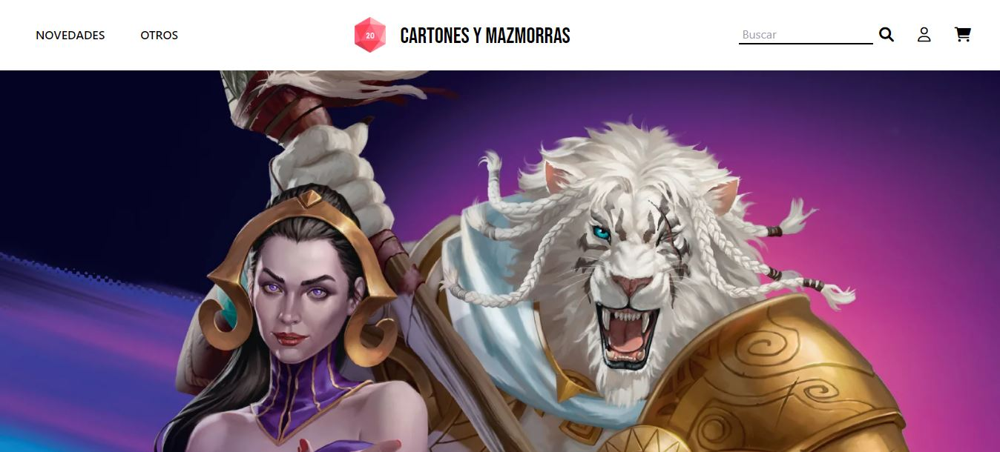
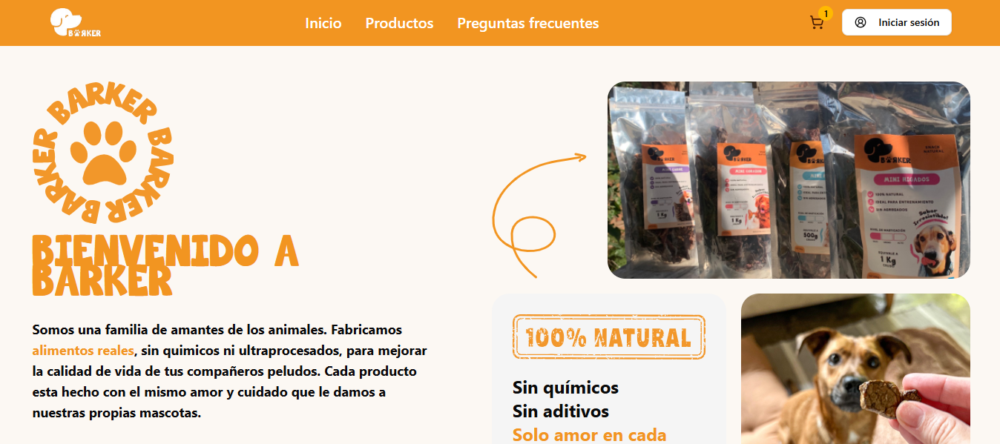
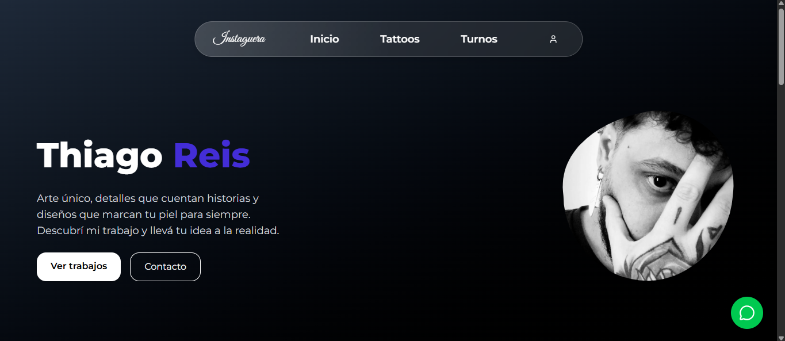
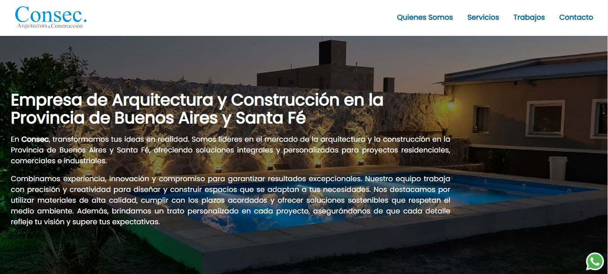
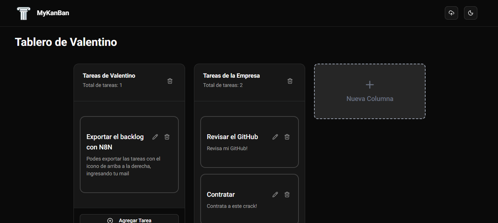
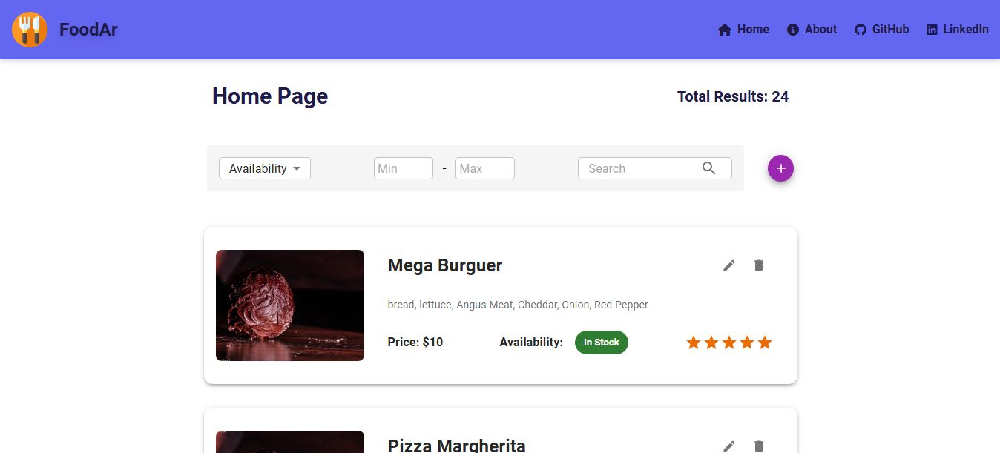

Proyectos Web
En esta sección podes ver mis páginas web. Me dedico plenamente al Front-End, podes revisar que tecnologías utilice en la sección de tecnologías.
Sistema para Gestión de Negocios y Empresas - TAUP Agency
Trabajé como principal diseñador y desarrollador de la UI/UX para este sistema de gestión de empresas multitenant que fue encargado a TAUP Agency. El mismo fue realizado con Next.js y TypeScript, usando la librería de Shadcn/ui en conjunto con tailwind.css y usé herramientas como Zustand para la gestión de estado global, Zod para validación de formularios y TanStack Query. No puedo mostrar el contenido de la app porque es de uso privado pero poseo una demo acá. Ingresá con "admin" y "admin123"!
Tecnologías:



Tienda Web para Alimentos de Mascotas - TAUP Agency
En este proyecto coparticipé como desarrollador Front-End, trabajé desde la refaccion de la UI, ajuste de detalles y rendimiento, como en la lógica de negocio que existe detrás de la misma para dueños y administradores. Aporté mejoras en diseño, rendimiento, diseñe y creé nuevas secciones. La página esta totalmente funcional y permite compras in-app con mercado pago. Solo tenes que crearte una cuenta acá.
Tecnologías:

Trabajo como Freelance
App para estudio de Tatuajes con Next.js + Spring Boot + PostgreSQL
Proyecto Freelance, desarrollado con Next.js y la librería shadcn/ui en el front y spring boot, JWT y PostgreSQL para el back. El proyecto fue encargado por un intimo amigo tatuador de Rosario que necesitaba un sistema para gestionar los turnos que tenia y además permitir que sus clientes puedan sacar turno en el momento que elijan y cuando elijan. Podes darle un vistazo en el siguiente enlace.
Tecnologías:

Landing Page con JavaScript y Tailwind - Freelance
Proyecto Freelance, desarrollado con JavaScript puro y TailwindCSS. Un cliente de mi ciudad me encargó rehacer su landing page para su empresa de construcción, asi que decidí mantenerla simple y atractiva, respetando leyes básicas del UI, y manteniendo un buen SEO a través de buenas prácticas como HTML semántico y aplicar conceptos como "lazy loading" para imágenes. Podes ver el resultado final acá.
Tecnologías:


Pruebas Técnicas
Tablero KanBan con Web Sockets - Next.js y Nest.js + N8N
Proyecto Full-Stack realizado con Next.js, Nest.js y MongoDB para una prueba técnica Full-Stack. Se solicitó recrear un tablero KanBan con columnas personalizables, notas editables y movibles con drag & drop fluido y web sockets (usé socket.io) para edición en tiempo real. Además, use N8N para automatizar la descarga y envío a un mail de elección los datos actuales del tablero; los mismos se envían en formato CSV. Esta hecho el deploy, asi que podés organizar tu día y luego exportarlo acá.
Tecnologías:



Food-Truck Finder con Next.js
Proyecto Full-Stack realizado 100% con Next.js para una prueba técnica. La idea principal es que un usario (localizado en San Francisco, US) pueda encontrar Food-Trucks en base a ciertos parámetros de búsqueda como distancia o tipo de comida. Desarrollé un pequeño Back-End gracias al API Routes de Next y usé Tailwind para estilizar.. Podes revisarlo acá.
Tecnologías:


Menu para Restaurante con React, Tailwind y Material UI
Menu interactivo hecho en React.js para una prueba técnica. Simula una carta de comidas que permite operaciones CRUD sobre un endpoint simulado a través de métodos HTTP. Usé React, Tailwind, Material UI y usé Vercel para el deploy. Podés interacturar con la carta directamente desde acá.
Tecnologías:


